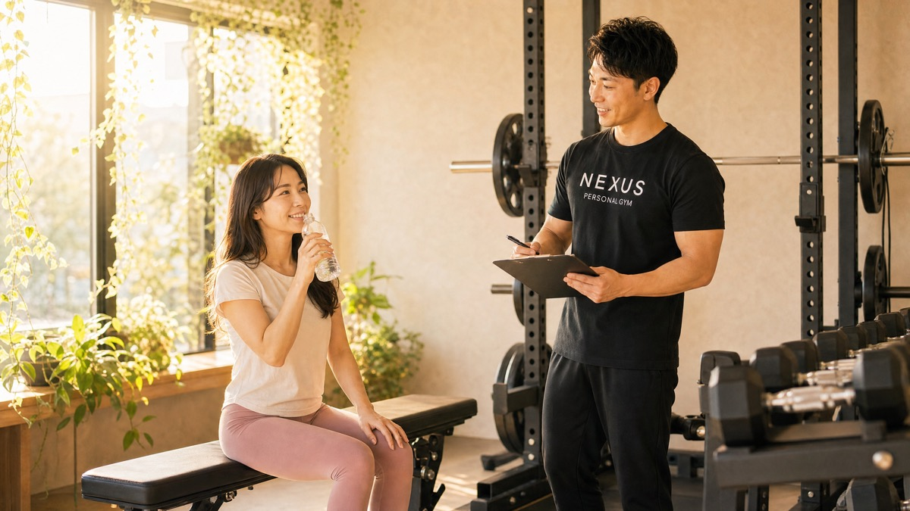
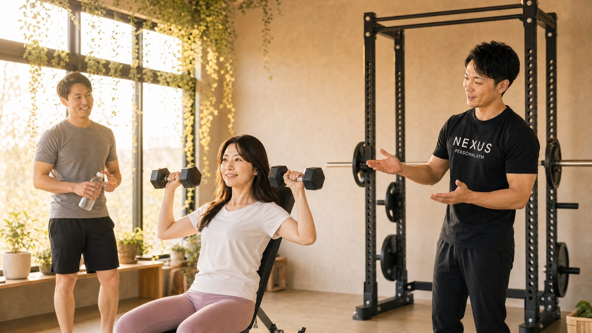

パーソナルジムが続かない7つの理由と、続く人がやっている対策

「パーソナルジム、また続かなかった…」
「高いお金を払ったのに、気づけば幽霊会員…」
こういう声、本当によく聞きます。そして多くの人が、その原因を「自分の意志が弱いせい」だと思い込んでいます。
でも、NEXUSパーソナルジム全国71店舗（80店舗までオープン予定）の現場で、何百人もの「続いた人」「続かなかった人」を見てきた立場から、はっきり言えることがあります。
結論：続かないのは「意志」ではなく「仕組み」の問題
ジムが続くかどうかは、意志の強さではなく「続く仕組みがあるか」でほぼ決まります。
続いている人が特別に真面目で根性があるわけではありません。むしろ「めんどくさいな〜」と思いながら、淡々と通い続けている人がほとんど。彼らに共通しているのは、意志に頼らなくても足が向く“仕組み”を、最初に用意していたという一点だけです。
この記事では、
① パーソナルジムが続かない7つの理由
② 続く人がやっている7つの対策（どのジムでも使える普遍的な内容）
③ 継続率96%※のNEXUSがなぜ選ばれるのか
④ 一度挫折した人が続いている実際の口コミ要約
の順に、現場の一次情報でお話しします。
※継続率96%は、NEXUS各店の会員が入会後も通い続けている割合をもとにした自社集計値です。時期・店舗により変動します。
なぜパーソナルジムは続かないのか？7つの理由
まず、続かなくなる典型的な理由を7つ。これは「あなたが悪い」という話ではなく、誰にでも起こりうる構造的なつまずきです。
理由1：最初の「やる気」に頼りすぎている
入会時にやる気MAXの人ほど、最初の1ヶ月で頑張りすぎて燃え尽きます。やる気はガソリンと同じで、使い切ればなくなる。やる気を「燃料」にしている限り、必ずどこかで切れます。
理由2：目標が高すぎて、達成感が来ない
「3ヶ月で-10kg」のような非現実的な目標を立てると、途中で「私には無理だった」と感じて辞めてしまいます。達成できない目標は、モチベーションを削るだけです。
理由3：通う曜日・時間が決まっていない
「空いた時に行く」スタイルは、最も幽霊会員になりやすいパターン。「今週は忙しいから来週まとめて」が続き、気づけば3週間ご無沙汰——という流れは、意志の問題ではなく予定化していないことが原因です。
理由4：ジムが生活動線から外れている
「少し安いから」「設備が良いから」と生活圏の外のジムを選ぶと、通うたびに“わざわざ行く”手間が発生します。人は疲れた日に、わざわざ電車に乗って行くことはできません。立地の遠さは、根性では埋まりません。
理由5：トレーナーに本音・不調を言えていない
「先週どうでした?」に「大丈夫でした」と答え続けてしまう。実際は仕事で疲れていたり、メニューがきつかったりするのに、それを伝えられない。本音が共有されないと、合わないメニューが続き、無理が積み重なって辞めることになります。
理由6：効果が「見えず」、手応えを感じられない
体重や数値、写真での変化が可視化されないと、「本当に効いているの?」という不安が募ります。手応えのないまま通い続けるのは、誰にとってもつらいものです。
理由7：一人で抱え込んでいる（伴走者がいない）
食事も運動も一人で管理し、うまくいかない日も一人で落ち込む。応援してくれる存在や、相談できる相手がいないと、小さなつまずきがそのまま離脱につながります。
7つに共通するのは、どれも「気合い」で解決できない問題だということ。だからこそ、必要なのは根性ではなく、次に紹介する“仕組み”です。
続く人がやっている7つの対策

ここからは、どのパーソナルジムに通う人でも使える普遍的な対策です。先ほどの7つの理由に、そのまま対応しています。
対策1：やる気ではなく「仕組み」で回す
「週1回・火曜の夜だけ行く」のように、最初から負荷を抑えて予定に組み込む。やる気がある日もない日も、同じ枠で淡々と通えるようにします。
対策2：目標を小さく刻み、達成体験を積む
いきなり-10kgではなく、まず「1ヶ月で-1〜2kg」「今週2回通う」など。達成→自信→次の目標のサイクルが、続く人をつくります。3ヶ月で-3kgでも見た目は十分変わります。
対策3：通う曜日・時間を固定する
「毎週土曜10時」のように生活の固定枠にする。ジムを“用事”ではなく“基準”にすると、予定が崩れにくくなります。曜日固定の人は、都度予約の人より続く傾向が明確にあります。
対策4：生活動線上のジムを選ぶ
家からの帰り道、職場の近く、毎朝通る駅の近く。「ついでに寄れる」立地を絶対条件にします。料金や設備よりも、まず立地。ここが続く・続かないを最も大きく左右します。
対策5：トレーナー・伴走者に正直に共有する
「今週は無理でした」「メニューがきつかった」とフラットに言える関係をつくる。本音が共有できれば、メニューやペースを調整でき、無理の蓄積を防げます。体験の段階で「正直に話せそうか」を見極めるのがコツです。
対策6：成果を数値・写真で見える化する
体重・体脂肪・サイズ、ビフォーアフター写真を記録して振り返る。小さな変化でも数字で見えると、手応えが継続の燃料になります。
対策7：一人でやらない（伴走の仕組みを持つ）
うまくいかない日に相談でき、頑張れた日に一緒に喜んでくれる存在をつくる。伴走者がいるだけで、離脱率は大きく下がります。
継続率96%のNEXUSは何が違うのか？
ここまでの7つの対策は「言うは易し」。実際には、一人で全部を仕組み化するのは大変です。
NEXUSパーソナルジムは、この7つの対策が“最初から仕組みとして組み込まれている”のが特徴です。継続率96%※という数字は、その積み重ねの結果です。
| 続く人がやっている対策 | NEXUSの仕組み |
|---|---|
| ①仕組みで回す | 完全予約制。トレーナーがその場で次回を確保し、通う予定を先に埋める |
| ②目標を小さく刻む | 一人ひとりのカウンセリングで、現実的な目標を段階設計 |
| ③曜日・時間を固定 | 固定枠での予約が可能。生活リズムに組み込みやすい |
| ④生活動線上を選ぶ | 住宅街・マンション一室型で全国71店舗。“通いやすさ”起点の立地 |
| ⑤正直に共有する | 完全個室マンツーマン。周りを気にせず本音を話せる関係 |
| ⑥成果を見える化 | 毎回の記録・数値管理とビフォーアフターで変化を可視化 |
| ⑦一人でやらない | 専属トレーナーによる二人三脚。食事も含めて伴走 |
特に女性会員が約85%を占めるため、30〜40代女性が「続けやすい」空気づくりに現場が慣れているのも、続く理由のひとつです。
※継続率96%は、NEXUS各店の会員が入会後も通い続けている割合をもとにした自社集計値です。時期・店舗により変動します。
まず、無料体験で「続けられそうか」を確かめる。
NEXUSパーソナルジムは、完全個室・マンション一室型。
続く人が選ぶ条件——生活動線上の立地・本音を話せる専属トレーナー・数値での見える化——が最初から揃っています。
まずは無料体験で、自分のペースで通えるかを確かめてください。
「続かなかった人」が続いている実例（口コミ要約）

以下は、実際にNEXUS各店に寄せられたGoogleクチコミを要約したものです（原文の転載ではありません）。過去にジムが続かなかった方が、どう続いているかの参考にしてください。
「24時間ジムに入ったものの一人だと続かなかった。仕事帰りに寄れる立地とマンツーマンで、今度は通えている」という趣旨の声。
服部天神店のページを見る →「目標を細かく設定してもらえるので達成感があり、飽きずに続いている。数値で変化が見えるのがモチベーションになる」という趣旨の声。
豊中店のページを見る →共通しているのは、「意志で頑張った」ではなく「続く仕組みがあったから続いた」という点です。全国の店舗一覧はこちらから、生活動線上に通える店舗があるか確かめてみてください。
まとめ＆よくある質問
パーソナルジムが続かないのは、意志が弱いからではありません。続く仕組みを用意できていないだけです。
- やる気ではなく、予定化・固定枠で回す
- 目標は小さく刻んで達成体験を積む
- 生活動線上の、本音を話せるジムを選ぶ
- 成果を数値で見える化し、一人で抱え込まない
この4点を押さえるだけで、続く確率は大きく変わります。ジム選びで迷っている方は、よくある質問（FAQ）や、料金についてのFAQ、ペア・家族での利用についてのFAQもあわせてご覧ください。